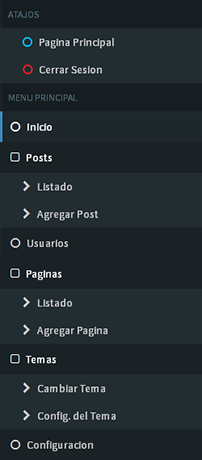

NOTA: Es necesario resaltar que el sistema esta aún en etapa de desarrollo y todo puede mejorarse. si tiene dudas o sugerencias puede contactarse con los desarrolladores en:...;
El sistema está desarrollado con PHP orientado a objetos y Mysql como gestor de bases de datos. Está compuesto por una serie de módulos principales que se complementan y permiten la utilización de otros módulos secundarios. En caso de no contar con un módulo en específico, este puede ser reemplazado por otro de funcionalidad similar, solo si es compatible, haciendo el sistema más flexible para los programadores.
También cuenta con una serie de herramientas que harán más fácil la producción de aplicaciones web dentro de este, actuando también como framework y teniendo la posibilidad de poder acceder a la base de datos de manera similar a un gestor de contenidos u otro framework similar, pero con la posibilidad de crear extensiones dinámicamente. De esta manera, se garantiza la flexibilidad en el código siempre y cuando se utilice las clases que el sistema aporta o creando nuevas siguiendo el patrón de desarrollo del mismo. La estructura de las clases está basada en un patrón de código que se puede seguir para facilitar la creación de nuevos módulos y así ampliar el campo de posibilidades a la hora de realizar código.
El sistema cuenta con dos archivos principales que reciben prácticamente toda la información que entra y sale en el sistema. Uno de los archivos es el “index.php” ubicado en la carpeta raíz de la instalación del sistema, todas las peticiones (salvo algunas excepciones) son redirigidas directamente a este, mediante otro archivo que se encarga de esta redirección (“.htaccess”), que las captura e interpreta de distinta manera según la configuración deseada. En el archivo se incluyen las dos clases principales: Rutas y Database.
La clase Rutas recibe y procesa los datos de la URL, y la procesa para devolver al usuario la página, también llamada “vista”, indicada. Las vistas mostradas pueden obtener información anteriormente almacenada en una base de datos mediante la clase Database. Esta incluye varios métodos para enviar o recibir información alojada en el servidor, como por ejemplo, Información de los usuarios, o de una sección de noticias.
La clase Database contiene una serie de funciones útiles para el funcionamiento del sistema y para el desarrollo íntegro de un nuevo módulo, utilizándose para agilizar el desarrollo a la hora de comunicarse con la base de datos.
Ya teniendo estas dos clases de uso general, las demás clases pueden funcionar correctamente e integrarse de manera que puedan funcionar en conjunto.
Para instalar el sistema deberemos disponer básicamente de un servidor con soporte de PHP y Mysql.
Primero debemos subir los archivos del sistema al servidor y modificar el archivo “.htaccess”.
RewriteEngine on
RewriteBase /directorio_instalacion
RewriteCond %{REQUEST_URI} !/directorio_instalacion/contenido/
RewriteCond %{REQUEST_FILENAME} !.*jpg$|.*gif$|.*png$|.*css$|.*js$|.*svg$|.*ttf$|.*woff$|.*woff2$|.*eot$
RewriteRule ^(.*)$ index.php?route=$1 [QSA,NC,L] Donde “/directorio_instalacion” es el directorio base del sistema.
Luego será necesario crear una nueva base de datos. La información de conexión de la misma debe ser actualizada en el archivo “database.php” ubicado en la carpeta “config” en el directorio de instalación, o “/config/database.php”.
return array(
"host" => "host_mysql",
"user" => "usuario_db",
"pass" => "pass_db",
"database" => "nombre_db",
);
Donde “host_mysql” es el nombre del servidor de la base datos. “usuario_db”, el nombre de usuario, “pass_db” la contraseña y “nombre_db” el nombre de la base de datos. Tambien deberá importarse a la base de datos el archivo "mysql_db.sql", ubicado en el directrio base del sistema, que contiene las configuraciones básicas de los módulos incluidos.
Despues de realizado todo el procedimiento el sistema debería ser accesible desde el navegador web ingresando la direccion del servidor donde fue instalado.
NOTA: Tambien debería poder ser posible ingresar al panel de administrador en la direccion de logueo default "/login" con los datos de sesion por defecto incluidos en la base de datos. Usuario: admin Contraseña: admin
En este simple manual se pretende explicar el funcionamiento basico del sistema, sus módulos y configuraciones generales para cualquier usuario con o sin conocimientos en programación. Dividido en # ←(reemplazar por numero de secciones) secciones para facilitar su comprensión se intentara explicar los conceptos basicos que cualquier usuario debe tener para utilizar correctamente el sistema.
Los siguientes conceptos serán utilizados en el manual y se daran por entendios.
Para ingresar al panel de administracion primero deberemos contar con una cuenta de administrador. Por defecto el usuario y la contraseña es "admin". Luego en nuestro navegador ingresamos a la direccion "/login" precedido de la de nuestro sitio. Por ejemplo: "www.misitio.com/login".

Lo primero que veremos al ingresar es algo similar a esto:

El dashboard esta dividido en tres partes principales. La vista central (1), la barra superior (2) y el menú principal (3).

1. En la vista central se muestra toda la información sobre los usuarios, publicaciones, temas y demas configuraciones del sitio. En esta vista se puede consultar y modificar toda la informacion que visualizan los usuarios, si se tienen los permisos adecuados (como una cuenta de administrador).
2. En la barra superior se puede apreciar el nombre del usuario que ingreso al dashboard y el logotipo del sitio que puede ser modificado en cualquier momento desde la pagina de configuraciones(insertar link a configs).

3. El menú principal contiene una lista de opciones para ver o modificar informacion referida a los usuarios y al sitio web en general y tambien una pequeña lista de "atajos" para cerrar sesion o dirigirse a la pagina principal del sistema de forma mas rapida.
Una vez hayamos ingresado al dashboard, debemos dirigirnos al menu principal. En el submenú de Posts, se encuentran opciones para crear y modificar, de manera sencilla, publicaciones en general en el sitio. Bastará con ingresar a la seccion "Agregar post", para ingresar a la pagina correspondiente.

Al ingresar, verá algo similar a esto:

Como puede observarse en la imagen, existen diferentes entradas las cuales servirán para guardar la publicación deseada en el sistema, para ser mostrada a los usuarios.